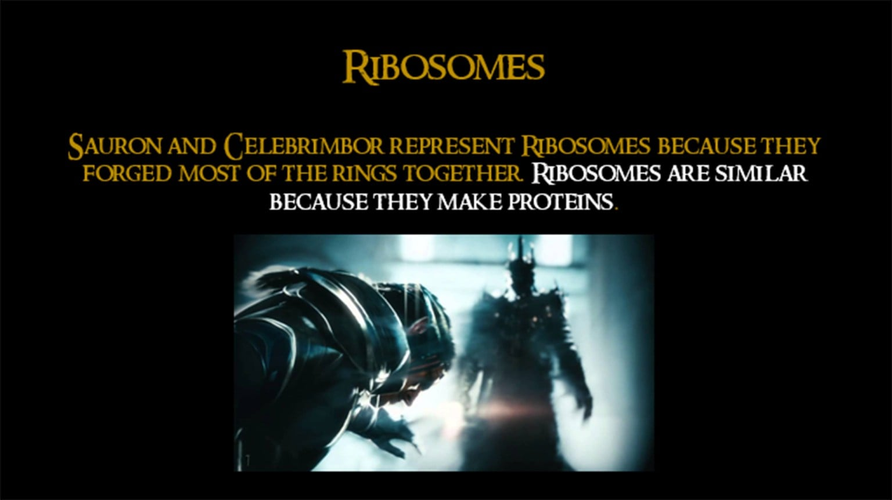

Cell Analogies
Grades 6-9, 90-120min
In the Cell Analogies project, students represent plant or animal cells by coming up with an overarching analogy that includes each cell component. They create a visual representation of their analogy on paper, in Google Slides or by coding it in Scratch, and then explain how each organelle fits in with their chosen analogy in a written justification.
Topics addressed
- Plant cells, animal cells and organelles
- Primary CT concept: abstraction. After spending some time learning about the nitty-gritty details of cells and organelles, this is a great opportunity for students to take a step back and think about the cell at a higher level, representing key concepts and functions with creative analogies.
Students will be able to
- Describe how each organelle functions and how it benefits the cell
- Create a visual representation their cell analogies in an artistic format
Materials
-
Slides:


-
Student handout:


- Craft materials, if you’d like students to have the option of creating a 3D model
Suggested lesson breakdown
This project is more of a practice/synthesis tool than a teaching tool, and therefore works best towards the end of the unit.
- 10min – introduce project, go over requirements and grading rubric
- 10-15min – students brainstorm their overarching analogy and how each organelle fits in
- 55-70min – students create their visual representations of their analogies
- 15-25min – students write their explanations of each component of their analogy
Next Generation science standards
-
NGSS.MS-LS1-2
Develop and use a model to describe the function of a cell as a whole and ways the parts of cells contribute to the function.
Common Core standards
-
CCSS.ELA-Literacy.RST.6-8.7
Integrate quantitative or technical information expressed in words in a text with a version of that information expressed visually (e.g., in a flowchart, diagram, model, graph, or table).